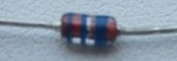
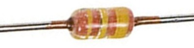

Диод КД521
Диоды КД521 - кремниевые, эпитаксиально-планарные, импульсные. Предназначены для применения в импульсных устройствах.
Выпускаются в стеклянном корпусе с гибкими выводами. Тип корпуса: КД-2. Масса диода не более 0,15 г.
Для обозначения типа и полярности диодов используется условная маркировка: одна широкая и две узкие цветные полоски на корпусе со стороны положительного (анодного) вывода:
- КД521А - синие;
- КД521Б - серые;
- КД521В - желтые;
- КД521Г - белые;
- КД521Д - зеленые.
 |
 |
| КД521А | КД521В |
Рис. 1 - Внешний вид диодов КД521

Рис. 2 - Размеры диода КД522
Таблица 1
| Тип диода |
Uобр max | Uобр и max | Iпр max | Iпр и max | Uпр/Iпр | Ioбр | fд max | tвос обр | Cд (при Uобр,В) | Т |
|---|---|---|---|---|---|---|---|---|---|---|
| В | В | мА | мА | В/мА | мкА | МГц | нс | пФ | °C | |
| КД521А | 75 | 80 | 50 | 500 | 1/50 | 1 | - | 4 | 4 (0) | -60...+125 |
| КД521Б | 60 | 65 | 50 | 500 | 1/50 | 1 | - | 4 | 4 (0) | -60...+125 |
| КД521В | 50 | 55 | 50 | 500 | 1/50 | 1 | - | 4 | 4 (0) | -60...+125 |
| КД521Г | 30 | 35 | 50 | 500 | 1/10 | 1 | - | 4 | 4 (0) | -60...+125 |
| КД521Д | 12 | 15 | 50 | 500 | 1/10 | 1 | - | 4 | 4 (0) | -60...+125 |
Условные обозначения электрических параметров диодов
Аналог
1N4148